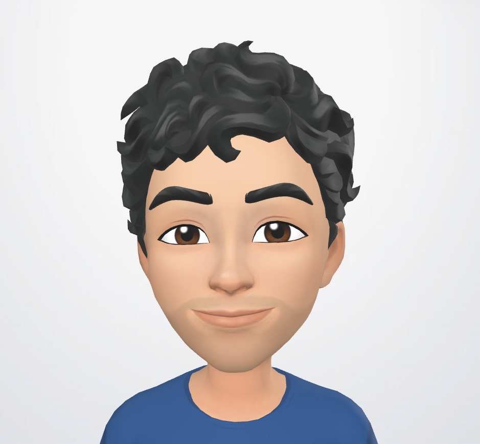
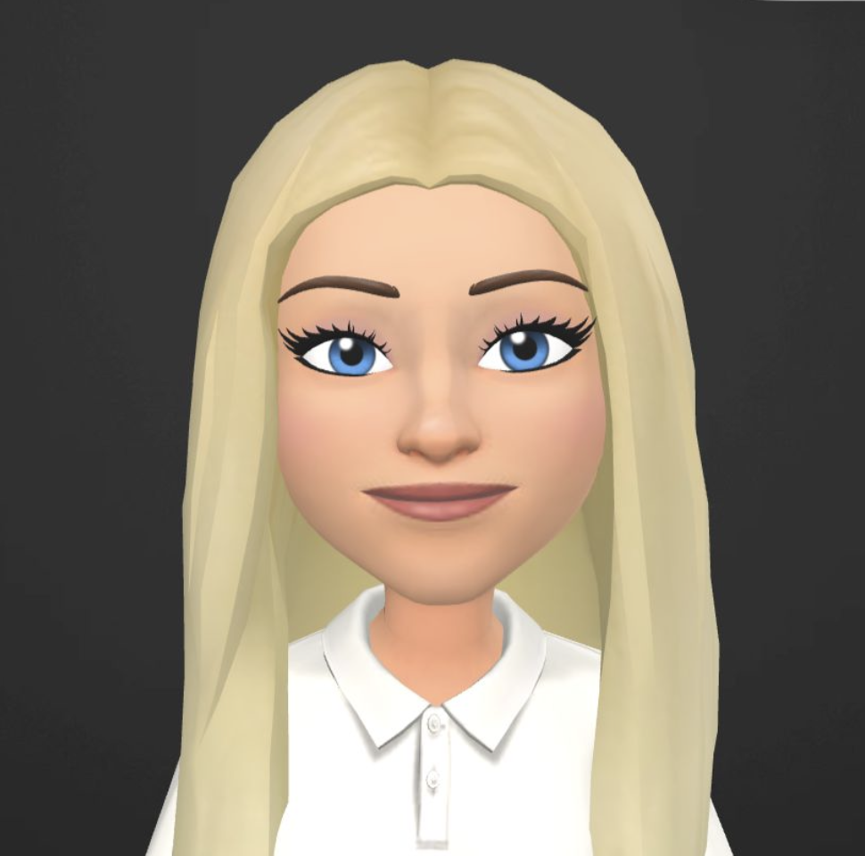
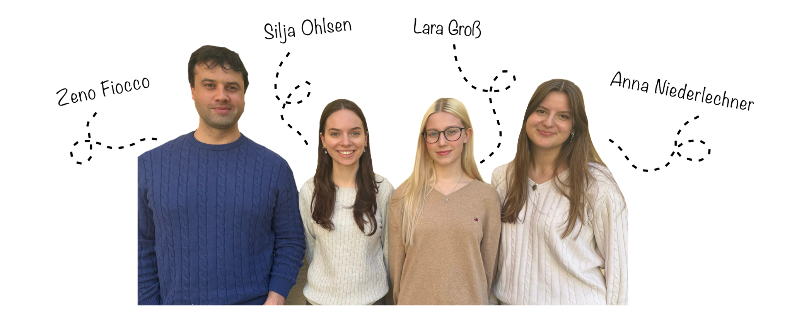

Wer wir sind
Wir sind Silja, Lara, Anna und Zeno – eine motivierte Projektgruppe aus dem Programmierpraktikum Bioinformatik im Wintersemester 2025/2026.
Uns verbindet die Begeisterung für die Schnittstelle zwischen Biologie, Informatik und Medizin. Während andere vielleicht nur Code oder nur Gene sehen, interessieren wir uns genau für den Punkt, an dem beides zusammenkommt: Algorithmen, die helfen, die Sprache des Lebens zu verstehen.
Gemeinsam entwickeln wir bioinformatische Werkzeuge, die biologische Sequenzen, Strukturen und Datenbanken analysieren. Dabei experimentieren wir mit verschiedenen Methoden, vergleichen Ansätze und versuchen, komplexe biologische Daten durch clevere Algorithmen verständlich zu machen.
Motivation
Bioinformatik bedeutet für uns mehr als nur Programmieren.
Es ist die Möglichkeit, mit Code neue Perspektiven auf biologische Daten zu öffnen.
Unsere Tools zeigen grundlegende Konzepte der computergestützten Analyse biologischer Daten – von Sequenzvergleichen bis hin zu strukturellen Betrachtungen. Gleichzeitig ist dieses Projekt für uns ein Experimentierfeld: ein Ort, an dem Neugier, Teamarbeit und viele Zeilen Code zusammenkommen.
Kurz gesagt
Vier Köpfe, viele Ideen und eine gemeinsame Mission – das Genom besser zu verstehen.
Kontakt
Falls Sie Fragen zu unseren Tools haben, Feedback geben möchten oder einfach neugierig auf das Projekt sind, freuen wir uns über eine Nachricht.